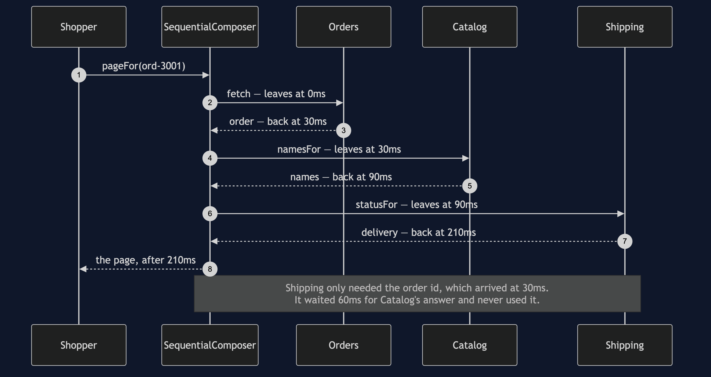
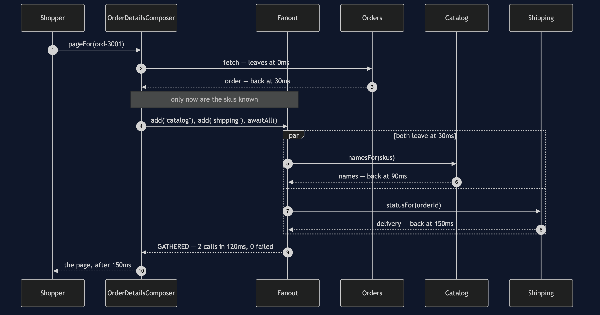
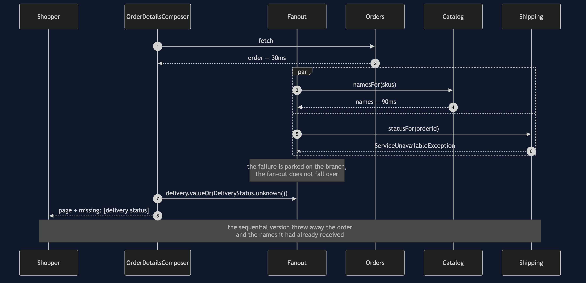
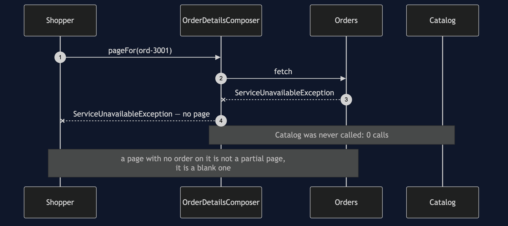
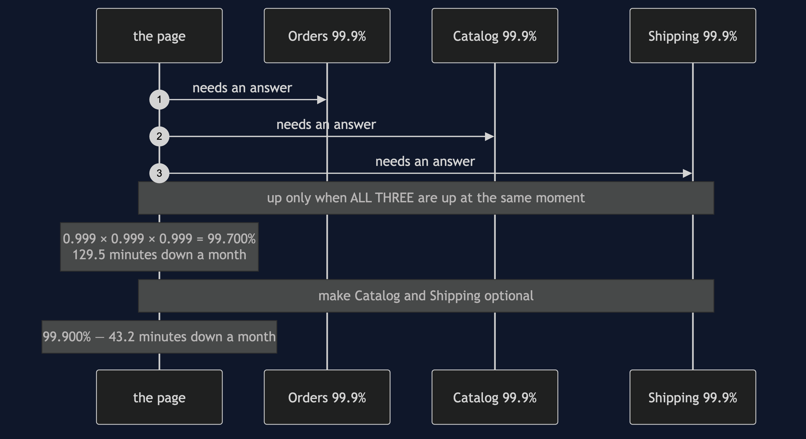

API Composition — UML Sequence Diagrams
Five sequences over the same page. Throughout: Orders answers in 30ms, Catalog in 60ms, Shipping in 120ms. Every number below comes out of ./gradlew run.
Act One: Three Calls In A Queue

Thirty plus sixty plus a hundred and twenty. The page costs the sum.
The line worth staring at is the third call. Shipping needs the order id and nothing else, and the order id was available at thirty milliseconds. It sat and waited for Catalog anyway, because that is what a sequence of statements does.
Act Two: The Same Calls, Sent Together

Thirty, then the slower of sixty and one hundred and twenty. The page costs the maximum.
Sixty milliseconds have gone, and they are precisely the sixty that Shipping used to spend waiting for something it did not need. bothBranchesLeaveTogether asserts that the two branches share a departure time, and itPaysForTheSlowestBranchOnly asserts the total.
Note what this diagram does not show: three arrows leaving at zero. Catalog cannot be asked which skus to name before Orders has said what they are. One call, then two together, is the real shape of most composed pages.
Act Three: Shipping Is Down

The same outage, two completely different outcomes. The sequential composer throws, and with it goes the order and the product names that had already arrived — itLosesWorkAlreadyDone asserts that loss. The composed page shows what the shopper bought, what it cost, and says plainly that the delivery status could not be checked.
The mechanism is one catch inside Branch.run, and one choice of accessor: valueOr rather than value.
Act Four: Orders Is Down

This is the classification working in the other direction, and it is correct behaviour rather than a gap in the pattern. Orders is required. Without it there is no honest page to show, so the composer does not attempt one — and because the failure happens before the fan-out exists, Catalog is not troubled at all. itStopsWhenTheOrderIsMissing asserts the zero calls.
Being able to say "this dependency is required" is as much a part of the pattern as being able to say "this one is optional". A composer that degrades everything is a composer that will eventually show somebody a page about nothing.
Act Five: What Three Dependencies Do To Availability

Not a sequence so much as an argument drawn as one, because the shape is the point: three arrows out, and the page only works when every one of them comes back.
Availabilities multiply. Three services that each behave impeccably — forty-three minutes of downtime a month apiece — combine into a page with over two hours, because their outages mostly do not overlap.
The way out is not better services. It is needing fewer of them, which is exactly what the required-and-optional classification buys.
Notes
- Every act uses the same three services with the same latencies. Nothing about the services changes between acts. What changes is which composer is asked and which service has been told to fail — which is the honest way to compare two designs.
Fanoutruns its branches in a loop, windingSimulatedClockback to the moment of departure before each one and forward to the slowest arrival at the end. The timeline that comes out is the timeline genuinely parallel calls would produce, which is why act two can be reasoned about without any threads existing.- Nothing in this project sleeps. A 400ms page costs a test nothing, so
theSlowestDependencySetsThePacecan set Shipping to 400ms and the suite still finishes in about a second. - In a real service the fan-out would be a virtual thread per branch, or
CompletableFuture.allOf, with a timeout on each. Every argument above would be unchanged.